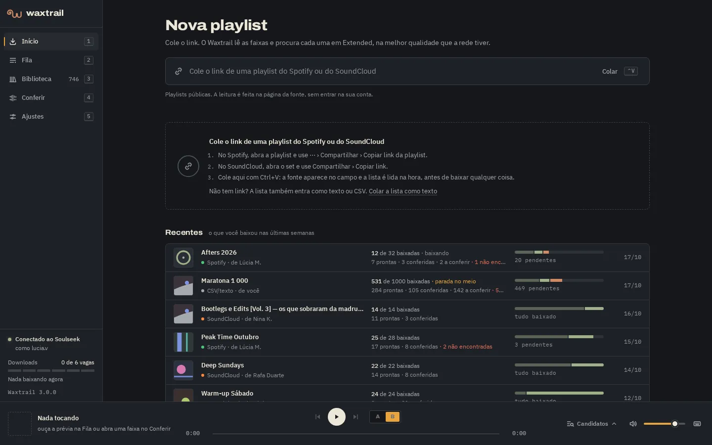
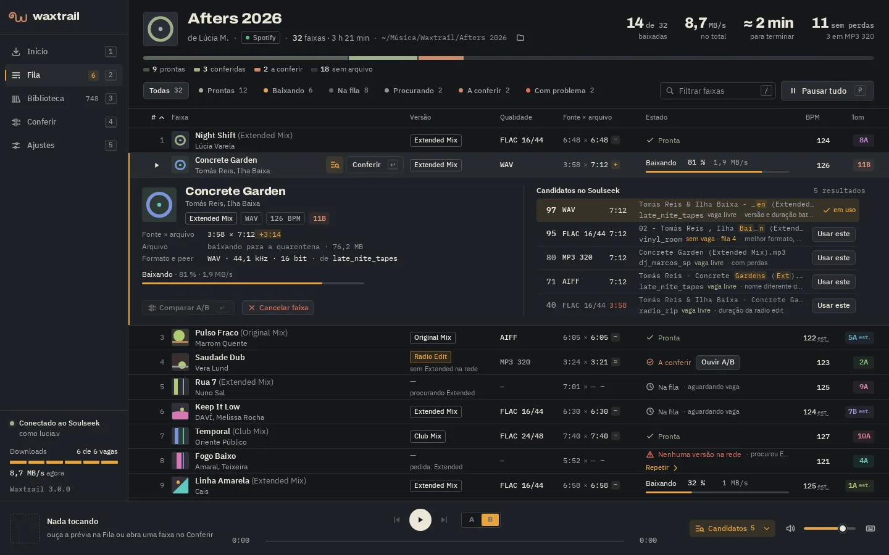
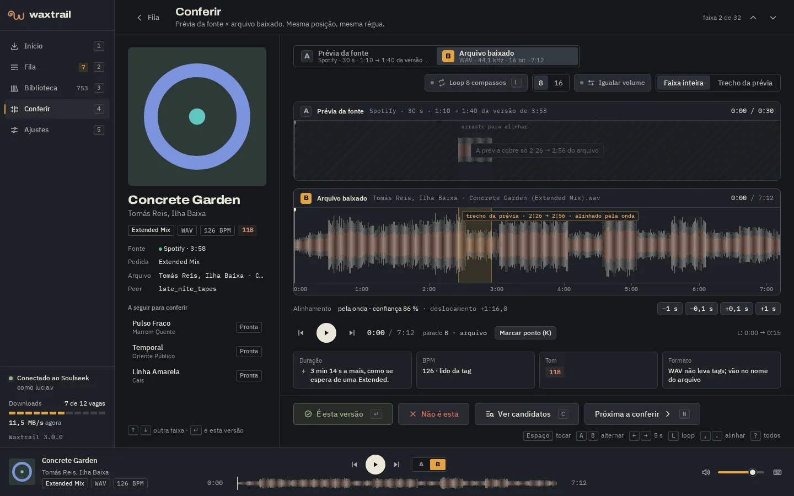
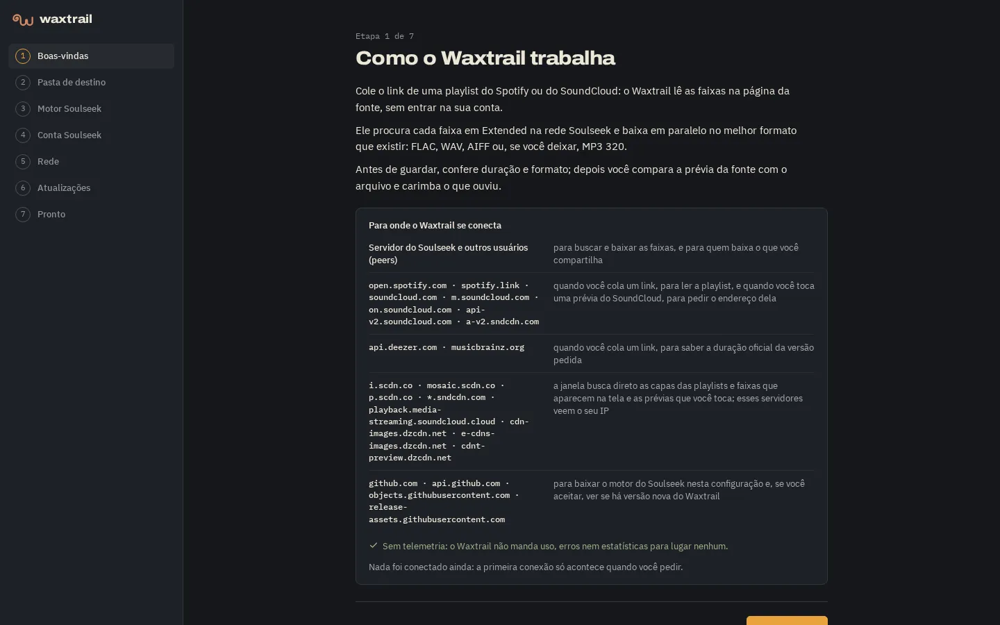

A versão certa de cada faixa, na melhor qualidade.
Extended em FLAC, WAV ou AIFF. Gratuito.
O Waxtrail é um baixador de playlists para DJ. Cole o link do Spotify ou do SoundCloud: ele procura cada faixa em Extended Mix no Soulseek, baixa em FLAC, WAV ou AIFF e você confere de ouvido antes do set. Gratuito: Linux, Windows e macOS.
Linux x86_64, Windows 10 e 11 (64 bits) e macOS 12 ou mais novo. Ver os pacotes
Na trilha, uma faixa da playlist de exemplo:
Concrete Garden
Tomás Reis, Ilha Baixa
Extended MixWAV3:58 × 7:12+3:14
- Link coladoAfters 2026 · 32 faixas lidas
- Procurandopedindo Extended · 3 peers respondendo
- Na filaposição 2 no peer
- Baixando 67 %WAV · 2,1 MB/s
- Conferindo duração e tags3:58 na playlist × 7:12 no arquivo
- ProntaExtended Mix · 126 BPM · 11B
Do link ao set
Você age no começo e no fim: cola o link e confere. O resto corre sozinho, com tudo à vista na Fila.
-
Cole o link
Playlist pública do Spotify, set do SoundCloud ou uma lista em texto/CSV. O Waxtrail lê títulos, artistas, versão e duração e mostra a ficha da playlist antes de começar.
-
Extended primeiro
Para cada faixa, a busca pede a versão Extended e escolhe o melhor candidato. Sem Extended na rede, vale a Original quando ela já é a versão longa; senão, a versão comum, com o rótulo à vista. Remixes pedidos ficam como estão.
versão antes de qualidade Extended › comum › radio edit
dentro da versão FLAC › WAV › AIFF › MP3 320, este só se você permitir -
Várias ao mesmo tempo
As faixas baixam em paralelo, com progresso, velocidade e o que está acontecendo em cada linha: procurando, aguardando vaga no peer, baixando, verificando.
-
Quarentena
Cada download é conferido antes de chegar à sua pasta. O MP3 disfarçado de FLAC aparece no espectro.
formato real · duração · decodificação completa · espectro · nome saneado
-
Confira e guarde
Compare a prévia oficial com o arquivo baixado na mesma posição, com BPM e tom. O que você aprova vai para a pasta da playlist, com o nome organizado.
destino ~/Música/Waxtrail/Afters 2026/
Salvar a faixa é fácil. Achar a versão certa, em boa qualidade, é o trabalho.
Quem toca sabe: Original Mix, Extended Mix e Radio Edit não são a mesma música, e um MP3 de 128 kbps não vale um FLAC. Procurar uma a uma no cliente Soulseek, para uma playlist de trinta faixas, come uma tarde. O Waxtrail faz a ponte entre a playlist que você já mantém e os arquivos certos, com a sua conferência no meio.
3:58na playlist. Concrete Garden, como está no Spotify.
7:12no arquivo. Concrete Garden (Extended Mix), em WAV, achada no Soulseek: 3:14 a mais para mixar.
Ouça antes de levar para o set
A prévia oficial da fonte (A) e o arquivo baixado (B) na mesma régua. Trocar de lado mantém o ponto da música, para você ouvir a diferença de verdade.
- Fonte
- Spotify · 3:58
- Pedida
- Extended Mix
- Arquivo
- Tomás Reis, Ilha Baixa - Concrete Garden (Extended Mix).wav
A prévia (A) é um trecho de 30 s da versão de 3:58 que está na playlist; o arquivo (B) é a Extended de 7:12. São 3:14 a mais: 1:36 de intro e 1:38 de saída para mixar. No trecho da prévia, as duas batem.
- Duração
- 3:58 × 7:12 +3:14
- BPM
- 126 × 126
- Tom
- 11B × 11B
- Formato
- prévia × WAV 16/44
Demonstração sem áudio, com uma faixa de exemplo. No app, A e B alternam e Espaço toca.
O Waxtrail 3.0, tela por tela
Capturas do app com uma playlist de exemplo, no tema que o seu sistema usa.



Waxtrail 3.0.0
Publicada em 22 de outubro de 2026. Gratuito. Os pacotes ficam nas releases do GitHub, com as somas SHA-256 assinadas para conferência.
Os pacotes ainda não têm assinatura comercial nem notarização: o Windows e o macOS pedem confirmação na primeira abertura, como explicado em cada parada.
Linux x86_64, Windows 10 e 11 (64 bits) e macOS 12 ou mais novo.
Linux
x86_64. O navegador não diz a distribuição: escolha o pacote.Arch, CachyOS, EndeavourOS e derivados
waxtrail-bin-3.0.0-1-x86_64.pkg.tar.zstsudo pacman -U ./waxtrail-bin-3.0.0-1-x86_64.pkg.tar.zstSe o Waxtrail 2 estiver instalado, ele é substituído (os dois usam o comando waxtrail); a biblioteca dele fica intacta. Prefere compilar o pacote? Baixe o PKGBUILD e rode makepkg -si na pasta waxtrail-bin.
Debian 12, Ubuntu 22.04 ou mais novos
Waxtrail-3.0.0-linux-amd64.debsudo apt install ./Waxtrail-3.0.0-linux-amd64.debO apt instala o pacote e as dependências da sua distribuição, também nos derivados.
Qualquer distribuição, sem instalar
Waxtrail-3.0.0-linux-x86_64.AppImagechmod +x Waxtrail-3.0.0-linux-x86_64.AppImage
./Waxtrail-3.0.0-linux-x86_64.AppImageO AppImage traz o próprio WebKitGTK. Precisa de x86_64 com glibc 2.35 ou mais nova. Sem FUSE no sistema (contêineres, algumas distribuições imutáveis), rode com --appimage-extract-and-run.
Outras distribuições
Waxtrail-3.0.0-linux-x86_64.tar.gzUsa o WebKitGTK 4.1 do sistema. O instalar.sh incluído põe o app na sua conta, em ~/.local, sem root.
Windows
Windows 10 e 11 (64 bits)
Waxtrail-3.0.0-windows-x64-setup.exeO instalador está em português, instala só na sua conta (sem pedir administrador) e cria o atalho no menu Iniciar e o desinstalador. O motor web (WebView2) já vem no Windows 10 atualizado e no 11; se faltar, o instalador o baixa da Microsoft. O motor Soulseek é baixado pelo próprio app no primeiro arranque.
O Windows protegeu o computador pode aparecer na primeira abertura, porque o instalador ainda não tem assinatura de código. Clique em Mais informações e depois em Executar assim mesmo.
Quem preferir não instalar pode usar o .zip: extraia a pasta Waxtrail e abra waxtrail.exe.
macOS
macOS Apple Silicon
Waxtrail-3.0.0-macos-arm64.dmgM1 ou mais novo, macOS 12 ou mais novo. Abra o .dmg e arraste o Waxtrail para Aplicativos.
O app ainda não é notarizado pela Apple. Tente abri-lo uma vez; depois vá a Ajustes do Sistema › Privacidade e Segurança, role até Segurança e clique em Abrir mesmo assim. O botão fica disponível por cerca de uma hora depois da tentativa.
macOS Intel
Waxtrail-3.0.0-macos-x64.dmgMacs com processador Intel, macOS 12 ou mais novo. A instalação e a liberação na primeira abertura são as mesmas do Apple Silicon.
Confira o pacote antes de abrir
Cada release traz o SHA256SUMS.txt com as somas de todos os pacotes, assinadas com minisign: confira a assinatura primeiro e depois o arquivo baixado. No Windows, o Get-FileHash do PowerShell mostra a soma do arquivo.
minisign -Vm SHA256SUMS.txt -P RWRHH8JA44Yfssw2ywsxAHAhYSgsJN3Bi7upMesMZ+RpjOYH4BMOlCtasha256sum -c SHA256SUMS.txt --ignore-missingWaxtrail 2.1.2, a geração anterior, continua disponível
O Waxtrail 2 é outro aplicativo, com outra biblioteca. O 3.0 não a importa nem a altera: cada geração tem a sua pasta de dados.
O que acontece na primeira abertura
Seis etapas, uma por tela. Nada se conecta antes de você pedir.
Privacidade
A lista exata dos endereços que o app acessa e quando.
Pasta de downloads
Por padrão,
Waxtraildentro da sua pasta de música.Motor Soulseek
O slskd (cerca de 60 MB, licença AGPL-3.0) é baixado do endereço oficial, com o SHA-256 conferido antes de rodar.
Conta Soulseek
Crie uma exclusiva do Waxtrail ou use a sua; a senha vai para o cofre do sistema, nunca em texto puro no disco.
Rede e compartilhamento
A porta de escuta e o compartilhamento das pastas das playlists baixadas (quem não compartilha costuma ser recusado pelos peers).
Atualizações
O app só consulta se há versão nova se você disser que sim; a pergunta vem sem resposta marcada.

Para onde o Waxtrail se conecta
Sem conta no Waxtrail e sem servidor. O app só fala com os endereços desta lista, a mesma que ele mostra na primeira abertura.
- Servidor do Soulseek e outros usuários (peers)
- Para buscar e baixar as faixas, e para quem baixa o que você compartilha.
- open.spotify.com · spotify.link · soundcloud.com · m.soundcloud.com · on.soundcloud.com · api-v2.soundcloud.com · a-v2.sndcdn.com
- Quando você cola um link, para ler a playlist, e quando você toca uma prévia do SoundCloud, para pedir o endereço dela.
- api.deezer.com · musicbrainz.org
- Quando você cola um link, para saber a duração oficial da versão pedida.
- i.scdn.co · mosaic.scdn.co · p.scdn.co · *.sndcdn.com · playback.media-streaming.soundcloud.cloud · cdn-images.dzcdn.net · e-cdns-images.dzcdn.net · cdnt-preview.dzcdn.net
- A janela busca direto as capas das playlists e faixas que aparecem na tela e as prévias que você toca; esses servidores veem o seu IP.
- github.com · api.github.com · objects.githubusercontent.com · release-assets.githubusercontent.com
- Para baixar o motor do Soulseek nesta configuração e, se você aceitar, ver se há versão nova do Waxtrail.
Sem telemetria: o Waxtrail não manda uso, erros nem estatísticas para lugar nenhum.
Segurança
Só a última versão recebe correções.
Achou uma falha de segurança? Não abra uma issue pública: reporte em particular pelo GitHub. A resposta vem por lá.
Reportar em particularComo conferir um pacote
Cada release traz o SHA256SUMS.txt com as somas de todos os pacotes. As somas são assinadas com minisign; confira a assinatura antes, com a chave pública do Waxtrail:
minisign -Vm SHA256SUMS.txt -P RWRHH8JA44Yfssw2ywsxAHAhYSgsJN3Bi7upMesMZ+RpjOYH4BMOlCtaDepois, na pasta em que o arquivo foi baixado:
sha256sum -c SHA256SUMS.txt --ignore-missingOs limites, ditos de frente
- Pacotes sem assinatura paga
- Os instaladores ainda não têm assinatura de código comercial. No Windows, o SmartScreen pede confirmação na primeira abertura; no macOS, o app não é notarizado pela Apple e precisa ser liberado em Privacidade e Segurança.
- SoundCloud é sempre com perdas
- O streaming do SoundCloud só entrega áudio com perdas. De lá, o Waxtrail lê a playlist e toca a prévia; o arquivo vem do Soulseek.
- Spotify: playlist pública, 100 faixas por link
- O Waxtrail lê só o que é público na página da playlist, e o Spotify mostra ali as primeiras 100 faixas. Para listas maiores, traga a lista inteira como CSV ou texto.
- Nem toda faixa existe em Extended
- Quando só existe a versão comum ou o radio edit, o Waxtrail baixa e deixa isso marcado na linha da faixa. MP3 320 só entra se você permitir.
- Quem baixa também compartilha
- No Soulseek, quem não compartilha costuma ser recusado pelos peers. O Waxtrail compartilha as pastas das playlists baixadas, nada além delas.
- O login do Soulseek não é cifrado
- É do protocolo da rede. Use uma senha só para isso.
- O motor Soulseek é de outro projeto
- O slskd (licença AGPL-3.0, cerca de 60 MB) não vem no instalador: o app baixa a versão oficial fixada no primeiro arranque, com a sua confirmação, e a executa sem modificação.
- Só para computador
- Linux x86_64, Windows 10 e 11 de 64 bits e macOS 12 ou mais novo. Não há versão para Android nem para iOS.
O que costumam perguntar
- O Waxtrail baixa música do Spotify ou do SoundCloud?
- Não. Dessas fontes ele lê só o que é público na playlist (títulos, artistas, duração, capa) e a prévia oficial, usada como referência na conferência. Os arquivos vêm do Soulseek.
- Preciso ter conta no Soulseek?
- Sim, a rede exige uma conta, que é gratuita. O próprio Waxtrail cria uma conta exclusiva no primeiro arranque, ou você usa a sua.
- Por que a busca insiste em «Extended»?
- Para quem mixa, a versão faz parte da faixa: a Extended tem intro e saída longas; o radio edit, não. Na música de clube a Original Mix costuma ser a versão longa: sem Extended na rede, ela vale.
- O que é o slskd, que o app baixa na primeira vez?
- É o motor que conversa com a rede Soulseek: um programa separado, de outro projeto. O Waxtrail confere o tamanho e o SHA-256 antes de executá-lo, e ele roda só no seu computador.
- Onde ficam meus dados?
- Numa pasta local:
~/.local/share/dev.iamcalegari.waxtrailno Linux,%LOCALAPPDATA%\dev.iamcalegari.waxtrailno Windows e~/Library/Application Support/dev.iamcalegari.waxtrailno macOS. As músicas vão para a pasta de downloads que você escolher. Desinstalar o app não apaga nenhuma das duas. - Posso continuar usando o Waxtrail 2?
- A biblioteca do Waxtrail 2 continua onde está e o 3.0 não mexe nela. No Linux, porém, os dois usam o comando
waxtrail: instalar o pacote do 3.0 substitui o programa do 2. Os instaladores da 2.1.2 continuam publicados. - Isso é legal?
- O Waxtrail é uma ferramenta de organização e busca; a responsabilidade pelo uso é sua, conforme as leis do seu país. Respeite os direitos dos artistas e compre as faixas que você toca.